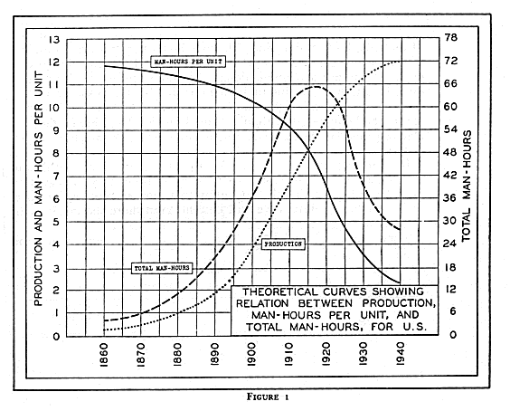

|
|
Search |
Printings: April 1940, September 1940, November 1945, March 1946, May 1946
Scanned in and somewhat proofread by trent.
The period since 1929 has been one of the most unique and one of the most disturbing in the history of North America. The events that have occurred since the stock market crash of that year have provoked more competent social thinking on the part of the American people, and have demolished more fixed tenets of our American social and economic faith than those of any preceding half century.
Up until the year 1929 the American public had been brought up in the belief that any child with ambition and a willingness to work would automatically be rewarded with material gain in direct proportion to the effort and ingenuity displayed; that any office boy might become the president of his corporation in due time provided he displayed the proper virtues of industriousness, honesty, respectfulness and thrift; that every boy had an equal chance of becoming President some day; that the pathway to success was to be found in part through proper education, and that educational facilities were equally available to all; that work could be had by all who were willing; and, conversely, that unemployment and lack of material success were themselves indicative of the lack of those cardinal virtues of industriousness, thrift, honesty, and the like.
In 1929 and the years that have followed, these tenets of our American folk-lore have been rudely shattered, for during that time one-quarter to one-third of all those willing and able to work have found it impossible to obtain employment and have consequently been forced to depend upon their relatives and friends for support, or else upon public governmental relief. During those years as many as one-quarter of the entire population have been dependent upon the funds of the federal government for food and clothing. Even the most independent and rugged of our remaining individualists, the American farmer, has found it increasingly necessary to rely upon the funds of the federal government. Corporate business has likewise had to be bolstered up.
In addition to these experiences, the American public has watched both government and business indulge in the curtailment of food production and its wholesale destruction at a time of the greatest human need in American history. They have seen their factories closed at a time when a large fraction of the population has been in want of the products of industry and when millions have been willing and anxious to work. They have placed high hopes upon the promises of their political and business leaders only to observe that in practice the fulfillment of these promises has resulted in a virtual pauperization of almost one-third of the population, with a standard of relief just sufficient to maintain social quiescence. They have seen their industrial equipment constrained to operate at a level only slightly above the lower limit of social tolerance. At the same time they have seen the debts of the federal government increase from 17 to 40 billions of dollars, and those of the state and local governments by some billions more of so-called `emergency expenditures' without the slightest prospect of the emergency becoming anything but worse.
More recently, they have witnessed the maneuvers of their political leaders in the direction of international intrigue, the logical consequence of which is war, as a means of diverting attention from their demonstrated incompetence at solving their legitimate problems at home.
While the experiences of these last several years have been bewildering and in many instances tragic, it is impossible for the American public to have lived through them without learning and without beginning to ask some profound questions: If our industry and our raw materials are adequate for the production of abundance, why should there be poverty and scarcity? Why should our plants be shut down and our produce destroyed or, what is equivalent, shipped abroad? If this production can be affected by automatic machinery, why should men have to work, and if they do not need to work, why should they have to starve?
These are elemental questions that the American people are asking, first of themselves and then of their leaders in business and in government. Furthermore they are questions that demand an answer. So far, the only answer they have received from these sources has been one of the most determined and most costly propaganda campaigns in history, in which the United States Chamber of Commerce, the National Association of Manufacturers, the Machinery and Allied Products Institute, the Automobile Manufacturers Association, the American Iron and Steel Institute, the National Industrial Conference Board, banks and other financial institutions, the spokesmen for scientific and engineering societies, innumerable trade journals, the press, the radio, and the screen have all joined forces in defense of one variation or another of the proposition that 'Machines create jobs!'
As yet, the only organization on the North American Continent which has analyzed this problem correctly and faced its implications squarely is Technocracy, Inc. When the public was told that prosperity was just around the corner,' that we were, having merely another turn of the 'business cycle,' that technological unemployment was nonexistent and, in the nature of things, impossible, it was Technocracy that pointed out the correct nature of the situation.
The method of analysis employed by Technocracy, though long since tried and proven in other domains of phenomena, was still strange and unfamiliar in our last stronghold of ignorance and superstition--the domain of human social phenomena. That method was the method of physical science, the method that had conquered the power of the wind and the water, that had mined and refined the minerals of the earth, that had harnessed electricity, unlocked the secrets of the atom, subdued disease, and which now at last was being employed to investigate and solve the problems of human society.
Like all witch doctors who feel their power slipping, our molders of public opinion have not taken this intrusion lightly. Most of the aforementioned propaganda has been offered in direct refutation of statements first made public by Technocracy in 1932. Yet the subsequent events--the only proof known to science--have consistently borne out the validity and accuracy of that analysis, much to the confusion of its critics.
Since, however, the method of that analysis, the method whereby social phenomena may be examined in the light of physical science, may not heretofore have been made sufficiently clear, it is proposed to treat in some detail one of the more pressing of our contemporary problems-that of technological unemployment-and certain other problems contingent thereto.
In any given field of production whether of goods or of services, there is a relationship between:
In any given field of production let:
A man-hour is defined as one man working one hour, regardless of the occupation.
From the above definitions the following relationships are obtained:
The total man-hours per year for the entire production are the product of the man-hours per unit and the total number of units produced in a year,
e=mq. (1)
Also the total number of man-hours per year is equal to the total employees multiplied by the average hours per employee per year. Thus,
e=nl. (2)
Equating (1) and (2) together,
nl=mq or n=(mq)/l (3)
Thus we see that the total number of employees at any time in a given industry is directly proportional to the man-hours per unit and to the rate of production, and is inversely proportional to the number of hours worked by each employee.
If at a given time mq is some finite amount, the number of employees, n, may be made as large as one wishes provided the working hours, l, be made short enough.
In general, in any given industry, production, man-hours per unit produced, and total man-hours do not remain fixed but undergo changes with time. If the total production, q, and the man-hours per unit, m, are considered to vary independently, the total man-hours, e, are uniquely determined by equation (1), e=mq, at any given time. the amount of work available is determined by total production and by the human time required to produce each unit.
Every physical quantity that changes with time does so under very definite physical limitations. Industrial production, being, a physical process, therefore proceeds under ordinary physical limitations. One of the most common types of physical growth is that in which a quantity increases by a fixed percentage of itself in equal time intervals. This is exactly equivalent to the increase in the principal of a sum of money at compound interest, where the interest is compounded continuously rather than per year. We shall speak of this as being a compound-interest type of growth.
Practically all industrial. production in its earlier stages increases with a compound-interest type of growth. From the Civil War to the World War, American industrial growth was at such a rate as to double itself once about every twelve years. This would correspond to an instantaneous rate of increase of about 6 percent per annum.
One of the basic principles of any such growth is that it is physically impossible for it to continue more than temporarily, for otherwise it would soon reach such proportions as to require more materials than exist in the entire earth. It also would outrun the capacity of the public to consume.
It follows, therefore, that the next stage of physical growth must be one of leveling off. The leveled-off stage may continue, or else be followed by a declining stage in which the quantity may become stabilized at a lower level than its maximum, or else continue to decline to zero.
The point at which the transition from the first stage of growth (that where the increase each year is greater than that of the year before) to the second stage, where the growth is definitely slowing down and the curve is leveling off, is called the point of inflection of the curve.

The point of inflection in the industrial growth of The United States occurred at about 1915, and from that time on to the present the growth of industry as a whole has been gradually leveling off. While it is physically possible to step industrial activity up to a level considerably beyond that of 1929, the time required to do so would not be long, and thereafter it would level off again. Hence it follows that from now on, the most important characteristic of the growth of American industry will be the dominance of leveling off over expansion.
The foregoing remarks are equally applicable to population growth. From 1790 till the Civil War the population of the United States expanded at about 3 percent per annum. By 1920 that rate had decreased to about 1.5 percent, and by 1936 to about 0.5 percent. According to present estimates the population of the United States will reach a maximum of about 135 million around the year 1950 and will thereafter possibly decline somewhat.
The man-hours required to produce a single unit of any given commodity or service vary with time in a manner quite contrary to that of the growth of production. The man-hours per unit are a function of the technology involved. It is an axiom in all machine design that every time a new machine is designed to do a kind of work formerly done by another machine or by handicraft, the new machine will in general run faster, weigh less per unit rate of output, and require fewer man-hours per unit than that used previously. Thus for the same kind of production the man-hour-per-unit curve, with rare exceptions, always declines.
In American industry the man-hour-per-unit curve has been declining spectacularly in the past. A knowledge of present technology indicates that if industry is only brought up to its own current best practice, the man-hour-per-unit curve will descend even more spectacularly in the future.
----------------------------------------------------
Number of Total Hours per
Employees Man-Hours Man per Year
Year n e l
----------------------------------------------------
1916 1,599,153 4,957,654,532 3100.2
1918 1,841,575 5,701,417,385 3095.9
1920 2,022,832 5,446,740,533 2692.6
1929 1,660,850 4,346,921,546 2617.2
1937 1,114,663 2,799,539,000 2511.6
----------------------------------------------------
These two long-time curves-the growth of production, q, and the decline of man-hours per unit, m, are shown in a hypothetical case which is plotted graphically in Figure 1. In this case the production curve, q, is taken from the total energy consumed in the United States, and hence reflects approximately the whole production of the United States for the period from about the Civil War to the present.
The curve of man-hours per unit, m, used in this hypothetical case is derived from the man-hours per unit in the manufacturing industry. Both of these curves represent approximately what has been taking place in the United States during the past three-quarters of a century. The curve of total man-hours, e, is a computed curve. The total man- hours for each year is given by equation (1) where e=mq for that year.
It will be noted that in spite of the increase of production, q, the decline of man-hours per unit, m, has been such that the product e=mq (total man-hours) reaches an absolute peak and thereafter declines. It cannot be emphasized too strongly that this is an event that does not repeat itself. In any given long-time growth period this has to happen, and it only happens once.
This maximum of total man-hours has occurred at different times in different industries. In our biggest single industry, agriculture, the all-time peak of employment, according to the U. S. Census, occurred about 1910. Agricultural production, however, continued to increase almost up till the present.
Complete data on railroads are given by the Interstate Commerce Commission report, Statistics of Railways in the United States, 1930. On page S-9 of this report is a table of average number of employees, n, total man-hours, e, and the number of man-hours per man per year, l, for the Class I railroads of the United States for every year from 1916 to 1930 inclusive. The essential points of this table are reproduced in Table 1.
The intermediate years are not quoted since they show values between those given. Only the data for the principal parts of the curves are quoted. The complete curves are given in Figure 2. The total man-hours in Class I railroads reached an all-time peak of over 5.701 billion in the year 1918. By 1929 this had declined To 4.347 billion man-hours. (By 1937 this had declined to 2.799 billion man-hours.) The total employees reached an all-time peak in 1920 Of 2,022,832. By 1929 this had declined to 1,660,850. (By 1937 this had declined to 1,114,663.) In the meantime the number of hours worked per employee per year declined more or less steadily from 3,100.2 in 1916 to 2,617.2 in 1929, (and to 2,511.6 in 1937). Railroad haulage, however, both in ton-miles and car-miles reached an all-time peak in 1929 (Statistical Abstract of the U. S.).
-------------------------------------------------------------------
Production Hours per Total Man-Hours
(millions of Man per Man-Hours per Lamp
lamps) Employees Year (millions)
Year q n l e=nl m=e/q
-------------------------------------------------------------------
1920 362.1 17,293 2,091 36.145 9.98 x 10-2
1921 242.6 10,929 1,986 21.710 8.95 X 10-2
1922 311.2 12,124 2,025 24.549 7.89 x 10-2
1923 404.2 12,933 2,090 26.821 6.64 X 10-2
1924 435.2 10,213 2,162 22.079 5.07 x 10-2
1925 459.3 9,062 2,180 19.753 4.30 x 10-2
1926 482.4 8,290 2,120 17.576 3.64 x 10-2
1927 544.6 8,099 2,213 17.922 3.29 x 10-2
1928 557.0 7,253 2,203 15.976 2.87 x 10-2
1929 644.0 7,259 2,205 16.003 2.49 x 10-2
1930 553.2 6,460 2,097 13.424 2.43 x 10-2
1931 503.3 5,317 1,968 11.443 2.27 x 10-2
-------------------------------------------------------------------
(U.S. B. L. S., Bull. 593)
Table II contains the complete data on production and employment in the assembly plants of the electric lamp industry for the years from 1920 to 1931 inclusive, as given by the U. S. Bureau of Labor Statistics, Bulletin No. 593. It will be noted that in this industry the employees, n, declined from 17,283 in 1920 to 5,817 in 1931. This means that the all-time peak of employment must have occurred at or prior to 1920. The production, q, meanwhile rose from 362,100,000 in 1920 to 503,300,000 in 1931. The man-hours per lamp, m, declined steadily throughout the period, from 0.0998 man-hours per lamp in 1920 to 0.0227 in 1931, a drop Of 77.2 percent.
Fairly complete data have been obtained on the whole manufacturing industries of the United States from the U. S. Census of Manufacturing and the Statistical Abstracts of the U. S. for the census years from 1899 to 1929. Approximate figures have been obtained for manufacturing since 1929 from various sources-principally the U. S. Bureau of Labor Statistics. What was sought in this instance were curves of total production, q, total wage earners, n, man-hours per unit produced, m, total man-hours, e, and the man-hours per man per year, l.
Some of these quantities, notably the production, q, had to be obtained indirectly from the data given by the Census. There is no fixed unit by which the production of miscellaneous articles may be measured, so the production figures must represent a composite of all manufacturing industries. There are several ways of arriving at an estimate of q. One is by the installed horsepower of prime movers in the manufacturing plant. If it be assumed that the load factor has not been declining, then the production will increase as fast as, or faster than, the increase in installed horsepower of prime movers.
Another method of obtaining an estimate is by the growth curve of total energy. Since energy is used in driving all industrial equipment, and since the output per unit of energy is constantly increasing with time, it is conservative to assume that manufacturing production has increased at least as fast as the increase in the use of enemy. Another approach is a monetary one. Let v equal the value of a given quantity, q, of products, and p their price per unit. Then,
q=v/p (4)
If the total value of all manufactured products is known and a wholesale price index is available, a relative value of q for succeeding years may be obtained.
In the case of the manufacturing industries all of the above methods give substantially the same results, namely, that from 1899 to 1920 the production, q, increased by a factor of from 3-5 to 4.0. The last named method was used merely because it happened to be most convenient.
The length of the working week, lw, has been taken from the study entitled Machinery, Employment and Purchasing Power by the National Industrial Conference Board, and represents the average number of hours actually worked as computed from payroll figures, instead of the nominal length of the working week. All other figures were either obtained directly or were computed by means of the foregoing equations from data given. These are given in Table III and shown graphically in Figure 3.
[ sorry about the poor formatting ]
Number of Average Value of Hours Per Total Man.
Wage Earn- Working Index of Product in Man Per Hours Per Quantity Man-Hours
ers in Week in Wholesale Billions of Year Year in Produced Per Unit
Year millions 1 Hours 2 Prices 3 Dollars 1 l==52.14 Billions (Relative) (Relative)
n lw p v lw e=nl q==v/p m=(nl)/q
------------------------------------------------------------------------------------------
1899 4.713 56.8 52.2 11.41 2962 13.96 21.96 6.38
1904 5.468 55.5 59.7 14.79 28% 15.92 24.78 6.38
1909 6.615 54.6 97.6 20.67 2947 18.83 30.57 6.26
1914 7.024 51.5 66.4 24.22 2695 18.86 36.47 5.17
1919 9.000 50.3 128.8 62.04 2923 23.61 48.20 4.90
1921 6.947 45.6 104.9 43.65 2378 16.52 41.62 3.97
1923 8.778 49.2 104.3 60.56 2565 22.52 58.10 3.98
1925 8.384 48.2 102.6 62.71 2513 21.07 61.15 3.45
1927 8.350 47.7 94.0 62.72 2487 20.77 66.88 3.16
1929 8.939 48.4 91.6 70.43 2524 22.31 76.90 2.90
1930 7.750 43.9 95.2 2239 17.74 *61.40 2.89
1931 6.523 40.4 74.6 2106 13.74 *51.70 2.66
1932 5.450 34.8 68.4 1814 9.89 *40.70 2.43
1933 5.825 36.4 69.0 1898 11.06 *48.45 2.23
1934 6.637 34.7 76.9 1809 12.01 *50.40 2.38
1935 6.940 37.2 90.2 1940 13.46 *58.20 2.31
------------------------------------------------------------------------------------------
1. U. S. Census of Manufacturers.
2. National Industrial Conference Board.
3. U. S. Department of Commerce Index Manufactured Goods Only After 1912).
*Based on Production index.
Here, as before, the production, q, mounted steadily to an all-time peak in 1929. The man-hours per unit in the meantime declined steadily from 1889 to the present. The total man-hours, which is the product of the man-hours per unit and the number of units produced, reached an all-time peak in the year 1919, and has been fluctuatingly declining ever since. In spite of the continued shortening of the hours of labor and the increase in production, it is significant to note that the all-time peak in the number of wage earners employed in the manufacturing industries was also reached in the year 1919.
Complete data on cigarette production and employment are given in Production, Employment and Productivity in 59 Manufacturing Industries, WPA National Research Project. The curves for this industry are given in Figure 4, and the figures for specific years are given in Table IV. (See also photographs on inside rear cover.)
While the foregoing are only specific instances, they happen to embrace the major part of the industrial activity of the United States and afford ample verification of the theoretical considerations set forth earlier in this paper. Since the same type of processes are occurring in every field of endeavor (witness the high-speed accounting machinery of the International Business Machine Corporation, for instance), it follows that the processes given somewhat in detail for some of our major industries must also be true of others for which complete data have not been obtained.
This latter conclusion is supported by the fact that, while production is estimated by the U. S. Bureau of Labor Statistics to have risen from 62 percent of 1929 in 1932 to somewhat more than 80 percent by early 1936, the unemployment, which is estimated to have been 14,520,000 in March, 1933, was still approximately 12,000,000 in early 1936 (U. S. Bur. Lab. Stat.) in spite of a reduction from a 48- to a 39- hour week in the meantime. (The number of new employables is increasing meanwhile at the rate of about 600,000 per year.)
Since labor-saving devices are certainly going to continue to be installed in the future with a consequent continued decline in the man-hours per unit of production, and since production itself can only be increased temporarily before leveling off again, it follows that the curve of total man-hours will, with only temporary reversals, be characterized by a continuous decline into the indefinite future.
Production of
Man-Hours Cigarettes in Cigarettes per
Year per year Units Man-Hour
------------------------------------------------------
1920 43,129,391 47,459,000,000 986
1922 37,251,423 55,790,000,000 1,497
1924 35,074,578 72,725,000,000 2,073
1926 33,336,230 92,110,000,000 2,763
1929 40,958,055 108,716,000,000 2,654
1930 33,924,891 123,810.000.000 3,649
1932 27,358,379 106,936,000,000 3,898
2934 36,391,393 130,065,000,000 3,577
1936 32,370,076 153,896,000,000 4,909
------------------------------------------------------
That this need not necessarily imply unemployment may be seen when one recalls from equation (3) that the number employed is
n=(mq)/l
If I be made short enough any number, n, may be given employment, and there need be no unemployment whatsoever. It might be remarked that a four-hour day is not at all to be unexpected in the near future. For the present, with production at 1929 levels, a day of somewhat longer than this would suffice to re-employ those now out of work.
It cannot be emphasized too strongly that the trends we are describing are long-time trends and were thoroughly evident prior to 1929. These trends are in nowise the result of the present depression, nor are they the result of the World War. On the contrary, the present depression is a collapse resulting from these long-term trends.
It is further to be emphasized that there is nothing in any of these trends corresponding to the economists' concept of a `business cycle.' The steady growth of population and the steady decline of man-hours per unit are both non-cyclical phenomena, and they do not repeat themselves. Neither has the mean growth of production exhibited any repetitions, nor has the curve of total man-hours, other than by minor zigzag oscillations. It rose steadily to a maximum and then steadily declined. We would like to emphasize that this ensemble of events has only occurred once in American history and, furthermore, it is absolutely certain that it will never occur again. Consequently all interpretations of the present situation as merely a recurrence of a situation that has been happening at intervals in the past, are basically fallacious and worthy of no serious consideration.
In the light of the foregoing discussion the answer seems simple and obvious. If it is possible to completely eliminate unemployment by a suitable reduction of the hours of labor per person, why not make the reduction and be done with it?
This would be simple enough were it not for the monetary aspects of the problem. Therein lies the difficulty. As it happens, all of our social and industrial operations are conducted in accordance with the rules of the game of the Price System. According to these rules, everything of value must be owned either by individuals or by corporations. Distribution is then accomplished by the mechanism of trade wherein owners exchange property rights over goods and services.
In the pioneer days it was customary for the great majority of our citizens to be property owners, and most of our industrial production at that time came from small, individually owned, industrial establishments. As our industry has grown there has been a corresponding metamorphosis in its ownership. Large units have proven more efficient and have progressively displaced small units. In the process the individual owner has been liquidated and his place taken by the corporation. The ownership and control of corporations has been pyramided more and more into the hands of a minute fraction of our total population.
With this growth of industrialization there has been an increased urbanization of the population until in 1938 out of 130 million people in the United States only 32 million lived on the farms, and all, even the farmers, were directly dependent upon the products of industry.
With the pyramiding of the ownership of the means of production into a small number of hands, there has resulted a large and ever-increasing fraction of the population whose ownership of property, aside from personal effects, is sensibly zero, yet these people, in order to live, must be able to acquire the products of industry-food, clothing, housing, transportation, and the like. Since it is a Price System rule that these things can only be acquired by trade, and since all that these people have to offer is their personal service-their man-hours then it follows that the consuming power of the great bulk of our population is directly geared to the income that can be acquired from the marketing of man-hours of labor.
Another fundamental rule of all Price System exchange is that the value of a thing, that is the amount of another commodity or of money that is exchangeable for it, varies with its scarcity. Air, for example, has no value because it is abundant and no way has yet been found to render it scarce. Water has value only in regions where it is scarce. The values of farm products are highest following droughts or other forms of crop curtailment.
The same is true of all exchange on a value basis; it is the fundamental rule of a Price System. In fact a Price System is defined as any social system whatever which effects its distribution of goods and services on the basis of commodity evaluation. When goods are scarce, values and prices are high; when goods become abundant, values decline, approaching the limit zero as the abundance approaches the saturation of the physical ability to consume.
Now, it has already been indicated that the great majority of our population have nothing to sell except themselves, or their man-hours. Man-hours, however, when for sale in the market place, are no whit different from shoes or potatoes. If they are abundant their price, in this case wages and salaries, goes down.
This would be true in any case just from competition, but it is greatly accentuated in those occupations most affected by technological advancement. Here the fundamental discrepancy arises from the fact that man-hours are competing not only with themselves but with kilowatt-hours developed from coal and water power. Physically, a man-hour represents a certain small amount of energy. A kilowatt-hour represents 13 times as much energy as that developed by a strong man working one hour. Yet a kilowatt-hour can be bought at a commercial rate of about one cent, while man-hours marketed at 25 cents each constitute starvation wages. Furthermore, it is an axiom of machine design that in any process wherein the same operations are repeated over and over again indefinitely, a machine can always be devised that can do the job better, faster, and cheaper than any human being.
The result of all this is that while it is physically possible, and in fact already a fait accompli, that our social mechanism can be operated while requiring of each of its members only a limited number of hours of service per day, it is impossible under Price System rules to pay them a living wage in exchange for these services. The unavoidable consequence, if the Price System rules are to be preserved, is that the unemployed must be kept quiet, which requires that they be fed and clothed at the minimum standard necessary to achieve that result.
Since it would remove the keystone of our whole social organization and constitute a violation of its fundamental article of faith which states that it is contrary to the will of God that man should receive something for nothing, for the unemployed to receive relief without working for it, it manifestly becomes necessary that work be provided for which wages can be paid. This work, however, must in no manner interfere with the activities of legitimate business, and the average wages paid for it must be below the average paid by legitimate business so that there will be no tendency for anyone to seek to better his social position by going on relief.
All this, so far as it concerns the destitute, has become familiar enough to the people of the North American Continent over the last several years and need not be dwelt upon further here.
There is, however, another side to the picture that demands consideration. The industrial production of goods and services is a physical process and consumption is also a physical process. Contrary to all the textbooks of economics, which state that human wants are insatiable, the fact is that human beings, regardless of income, can only consume a limited amount of food per day, can only wear one outfit of clothing at a time, and so with all other forms of consumption. The result is that when the income of an individual or family reaches a certain size, this saturation is produced and any further income goes into non-consuming expenditures or else, into savings. Incomes smaller than this critical amount are almost all spent for consumption, and savings from them are negligible. Above this critical amount the fraction of the income saved increases rapidly.
The transition between the small incomes and the large, between those with negligible and those with large savings is, of course, gradual, but it may be taken arbitrarily at about $5,000 per family. Using this figure as an arbitrary division between large and small incomes, we find, according to the Brookings Institution study, America's Capacity to Consume, that in 1929 out of a total Of 27 millions of families in the United States, 25 million, or 91 percent had incomes less than $5,000 and 2 million, or 9 percent, had incomes greater than this amount. Yet of the total savings of 15.1 billions of dollars, 12.5 billions were made by the 9 percent of the families whose incomes were greater than $5,000.
Merely because they constitute such an overwhelming majority it is the people with small incomes who do most of the consuming of the products of industry, and since these people spend essentially their entire incomes for consumption, we may say that industry runs or shuts down on the basis of the aggregate total of the small incomes. If these are increasing, consumption increases and industrial production increases; if these are decreasing, consumption decreases and industry begins to shut down.
The small incomes, however, are predominantly derived from the marketing of man-hours of personal service, and we have already seen that when available man-hours exceed the requirement for man-hours their price goes down. This in turn curtails small incomes which then leads to the stagnation of industrial operation. If we let e be the total of all man-hours marketed in a given year at an average wage of w, and i be the total income received from that source, then
i=we. (5)
If this income is all spent for goods and services at an average price p, then the number of units c that can be consumed is
C=i/p=(we)/p (6)
But on the average, production must approximately equal consumption so that the number of units q produced per year must equal the units c consumed, and
q=c=(we)/p (7)
This is necessarily true of that part of production and consumption accounted for by the recipients of small incomes, but since these are responsible, because of their great superiority in numbers, for the bulk of the consumption of the products of industry, it also is the controlling factor of industrial production.
We already know that with production constant or even increasing, he total man-hours e are decreasing. Consequently from equation (7) at any given price level, p, the consumption can only equal production provided the total income i is proportional to the production. This is is only possible provided, that wage rates be increased in proportion to the decline of total man-hours. Were this done purchasing power could be maintained adequate for any arbitrary level of production, and with zero unemployment. If it is not done, purchasing power will decline, the spectre of unemployment will remain and will become aggravated with time, and production will again shut down.
This leads us to the significant conclusion that in order to maintain production the public must be paid enough purchasing power to buy an the goods reduced, independently of the amount of work done per man or woman, or whether they work at all or not.
Yet if we supply this purchasing power in the only legitimate Price System manner, namely, in payment for man-hours of services rendered on the basis of the market value of man-hours, we find the purchasing power of the vast majority of our population becoming inadequate to maintain industrial operation. So that not only is this a problem of he individual consumer; it is the life-and-death problem of political government and business.
Still another way of approaching the same problem is by means of following the circulatory flow of money. Let us lump all productive and distributive enterprises together under the term industry and all consumers together as the consumer. In a given year the consumer spends a certain amount of money for the goods and services produced. This constitutes the income received by industry.
A part of this income received from the consumer, industry distributes through wages and salaries, royalties, rent, interest, and dividends directly back to the consumer again. A part is retained as surplus, a part goes into the hands of corporate financial institutions, and a part is paid as taxes, the latter being distributed principally as salaries to consumers.
Of the money paid by industry directly or indirectly to the consumer, about half goes to the 9 percent with large incomes and the remaining half to the 91 percent with small incomes. About 20 percent of all individual incomes is `saved' and does not become available directly for a second purchase of consumers goods and services from industry. The fraction withheld by industry itself as surplus is likewise withdrawn from immediate re-use as consumer purchasing power.
We thus see that if industry operates profitably and any of its income is withheld either as surplus or by financial institutions from becoming consumer income, and if individual incomes are in part withheld from direct purchases of the products of industry, the income of the public after each circulation will become less than it was the time before, and the monetary flow will be rapidly `dried up.' Unless this deficit is somehow made up elsewhere, industry will shut down as a result.
The customary way for the deficit to be made up is by investment into new industrial plant and equipment. For example, if a billion dollars which is withheld in one of those ways is spent on a new plant, it goes out as wages, salaries, and the like into consumer income and is available for further purchase of consumer goods. The financing of new plant is commonly affected through bank loans, bonds, or mortgages, all of which constitute new debt, and hence represent an actual increase of the money in circulation; or new plant can be built with money saved up as corporate surplus, which by this means is fed back into the channel of consumer purchasing power.
In this connection it should be pointed out that the common denominator of all kinds of money, except the negligible amount of gold, is debt. Governmental currency is the government's promise to pay; a bank deposit is the debt owed by the banker to the depositor; and a bond is a certificate of debt from the issuer to the purchaser. Thus if a million dollars worth of bonds be issued and marketed, the total debt, or money, in circulation is increased by roughly a million dollars. Hence debt and money can be created out of nothing. Debt can also be annihilated into nothing, the call of a loan or of a bond issue being such an instance. (For elaboration of this point see Wealth, Virtual Wealth and Debt by Frederick Soddy, E. P. Dutton and Company, N. Y.)
Thus from what we have seen, if industry, financial institutions, and individuals save, the savings can be reinvested into industry through the mechanism of new debt creation, and if the investment is used to build new industrial equipment the money then circulates back to consumer income and makes up the deficit created by the initial withdrawal.
This, in fact, is what did happen in the growth of American industry up until about the time of the World War. During that time our industry was growing at a rate such that its output doubled every 12 years. But that was also the period for which an expansion of industry meant an expansion of employment.
Now let us consider what happens when the discrepancy between the amount of the large incomes and that of the small becomes so great that the amount withdrawn as savings is too large to be absorbed by new industry. For example, when the consumer income (chiefly the small incomes) becomes inadequate to keep the existing plant from operating to capacity, investments into new industrial plant have little probability of proving profitable. Consequently such investments are, in general, not made.
Under these conditions new debt is not issued at a rate equal to the accrual of savings, and savings are either hoarded or employed to purchase the securities of already existing plant.
This has two immediate consequences: One is that the `paper investment' of savings into old securities of existing plant merely results in distributing the profits from the existing plant to the holders of an ever-increasing number of dollars worth of capital investments, which also means that the returns per hundred dollars invested, or the interest rate, must continuously decline. The other is that the money paid back to the consumer is no longer equal to that withdrawn from circulation as savings, which leads to a standing deficit in the consumer income available for the purchase of the goods and services of industry. As technological advancement and the resultant discrepancy between large and small incomes increases, this situation can only get worse with time.
Both of these factors, the slowing down of industrial expansion and the slowing down of paper investment [into the securities of existing industry with a consequent decline of the interest rate and increasing deficit in consumer purchasing power] have been dominant influences in the United States since the World War. Here let it again be emphasized that these results are in nowise due to the War, but to long-time evolutionary trends, the World War being merely a convenient date of reference.
In this manner we arrived at a stage of development wherein the legitimate procedures of business, which in an earlier day were sufficient, were no longer adequate to meet the necessary conditions for social stability. Consequently extraordinary measures have had to be instituted. One of these measures was the World War itself. Purchasing power with which to buy the products of industry was provided by means of government and foreign debts. Industry was boomed by the wartime destruction of its products. During and after the war lavish credits were extended abroad and consumer purchasing power at home was bolstered through the debt creation mechanism of installment buying.
All of these measures were obviously temporary in that they could not be kept up. They contained no provision for self-liquidation except by repudiation, and indeed a day of reckoning did come in 1929. After that time a new method of meeting the same discrepancy of purchasing power had to be provided, and since business had already played its cards, the government had to come to the rescue, and the deficit in consumer purchasing power was in part made up through the governmental creation of debt in the form of the unbalanced budget.
This, it may be remarked, is the sole secret of what little success may be boasted by the New Deal. The purchasing power of the small income public was not adequate to maintain consumption and industrial operation at previous levels. By the mechanism of the unbalanced budget this was in some measure made up through the emergency and relief expenditures of the United States government. Consumption increased; production followed. By the year 1937 industrial production was again n approaching and in some instances exceeding the previous all-time high in 1929. At this stage the spokesmen of business, still imbued with the doctrines of the economists concerning the efficacy of 'confidence' and apparently unaware that the government spending was the only important source for making up the deficit in the business budget, set up a hue and cry for the government to balance its budget. Promises to balance the budget were made and the excess of government expenditures over receipts was reduced from 4.8 billions of dollars in 1936 to 2.8 in 1937. The immediate consequence of this was the most drastic curtailment of industrial production yet known. Between September, 1937 and January, 1938--but 4 months--the volume of industrial production dropped by an amount which in the 1929 'crash' required the 20 months from October, 1929 to July, 1931. Yet the 1937 instance has been euphemistically called a 'recession.' Again, as in 1933, the solution to this situation was found in the prompt injection of more billions of dollars of government money into the purchasing power of the small income public. (Note: in the original version of this article, published in Technocracy A-8, 1936, it is stated: ``Since nothing has been done in the meantime by private industry to 'provide for the deficit in small incomes, it follows that, should the federal government discontinue its relief and emergency expenditures whereby purchasing power is given to individuals, industrial production will again shut down, but faster and tighter than it has ever shut down before.'')
Since there is no mechanism whereby private business is able to make up this deficit it still follows that the only thing that is keeping business off the rocks is the continuation of government spending into the indefinite future; or, what amounts to the same thing financially--war!
The whole virtue of government spending--as long as it can be kept up--consists in the fact that money is being paid to the small income public in excess of the amount simultaneously taken away in the form of taxes. It is a simple matter to see that if the consumer income is already inadequate to support industrial operation, the situation is in nowise changed by governmental robbing of Peter to pay Paul because Paul and Peter still have between them the same purchasing power after as before. On the other hand, if Paul is paid some new dollars especially created for the occasion without the robbing of Peter, the total purchasing power of the two of them is increased by the amount of the new debt created.
It has already been noted that while the previous methods of meeting this deficit in consumer purchasing power have been varied--rapid industrial expansion, world war, foreign credits, installment buying-- they all have this in common: That they were temporary expedients and could not be maintained as a permanent policy. This is no less true of the government unbalanced budget except that when this fails it carries with it the collapse of the entire financial structure.
Of late there have been voluminous propaganda arguments to the effect that the deficit in purchasing power has been offset by the decline in the prices of manufactured articles, the decline in the price of automobiles from several thousand dollars to about $500 each being a favorite exhibit. The irrelevance of this is obvious when it is considered that the deficit in purchasing power results entirely from the fact that in order for industry to operate profitably and at the same time to disburse any funds at all to large incomes, the amount paid back to small incomes must be less than that taken from the consumer originally. This is entirely independent of the price of the product. but necessitates that the price, however small it may be, must always be greater than the cost of production. Thus no matter how greatly prices may be reduced, the money paid back to the small income public by any industrial enterprise operating profitably is always insufficient to enable the public to buy back its total output. The same must therefore be true of all industry when lumped together.
Another specious argument often heard is that all businesses operate at a loss and thereby represent a source of surplus purchasing power. The fallacy here is that almost every one-armed roadstand Constitutes a `business.' Consequently, while the total number of such business enterprises is large, the part played by them is inconsequential as compared with the vast corporate enterprises such as railroads, steel, oil, and the like. In fact, a prevailing interest rate greater than zero is itself a statistical average of the profits and losses of all business enterprises and indicates the excess of profits over losses.
In the foregoing, our industrial growth and its Price System monetary control have been considered in some detail because this is one of the most misunderstood and misrepresented problems we have to deal with at the present time; yet the phenomena here discussed are fundamental with respect to all the major problems in the operation of our social mechanism.
What we have seen is that our leaders of business and government have gone from one blind expedient to another without the slightest prospect of accomplishing anything more effective than a postponement of the evil day when no expedient can be made to work any longer. Yet, in spite of all efforts, one-third of the population of this, the most richly endowed Continent on earth, have become virtually pauperized, and the people of North America may consider themselves fortunate indeed if they are not further induced by the same business and political leadership to offer up a human sacrifice over a trumped-up foreign war as an additional futile gesture.
A more eloquent example of demonstrated incompetence on the part of social leaders is not to be found in all the annals of human history!
What is there so difficult about the problem? What is it that has to be done in order to solve it? Simply and solely that our Continental totality shall be operated at a maximum of efficiency with a maximum conservation of resources for the maximum production and distribution of physical wealth--with a resultant standard of living greater than has ever been obtained on the North American Continent.
To do this requires a social organization designed to operate all production sequences and a distributive mechanism that will deliver the products of industry to the consuming public at whatever rate is required.
In the distribution to the public of the products of industry, the failure of the present system is the direct result of the faulty premise upon which it is based. This is: that somehow a man is able by his personal services to render to society the equivalent of what he receives, from which it follows that the distribution to each shall be in accordance with the services rendered and that those who do not work must not eat. This is what our propagandists call `the impossibility of getting something for nothing.'
Aside from the fact that only by means of the sophistries of lawyers and economists can it be explained how, on this basis, those who do nothing at all frequently receive the largest shares of the national income, the simple fact is that it is impossible for any man to contribute to the social system the physical equivalent of what it costs that system to maintain him from birth till death-and the higher the physical standard of living the greater is this discrepancy. This is because man is an engine operating under the limitations of the same physical laws as any other engine. The energy that it takes to operate him is several times as much as any amount of work he can possibly perform. If, in addition to his food, he receives also the products of modern industry, this is due to the fact that material and energy resources happen to be available and, as compared with any contribution he can make, constitute a free gift from heaven.
Stated more specifically, it costs the social system on the North American Continent the energy equivalent to nearly 10 tons of coal per year to maintain one man at the average present standard of living, and no contribution he can possibly make in terms of the energy conversion of his individual effort will ever repay the social system the cost of his social maintenance. It is not to be wondered at, therefore, that a distributive mechanism based upon so rank a fallacy should fail to distribute; the marvel is that it has worked as well as it has.
Since any human being, regardless of his personal contribution, is a social dependent with respect to the energy resources upon which society operates, and since every operation within a given society is effected at the cost of a degradation of an available supply of energy, this energy degradation, measured in appropriate physical units such as kilowatt-hours, constitutes the common physical cost of all social operations. Since also the energy-cost of maintaining a human being exceeds by a large amount his ability to repay, we can abandon the fiction that what one is to receive is in payment for what one has done, and recognize that what we are really doing is utilizing the bounty that nature has provided us. Under these circumstances we recognize that we all are getting something for nothing, and the simplest way of effecting distribution is on a basis of equality, especially so when it is considered that production can be set equal to the limit of our capacity to consume, commensurate with adequate conservation of our physical resources.
On this basis our distribution then becomes foolproof and incredibly simple. We keep our records of the physical costs of production in terms of the amount of extraneous energy degraded. We set industrial production arbitrarily at a rate equal to the saturation of the physical capacity of our public to consume. We distribute purchasing power in the form of energy certificates to the public, the amount issued to each being equivalent to his pro rata share of the energy-cost of the consumer goods and services to be produced during the balanced-load period for which the certificates are issued. These certificates bear the identification of the person to whom issued and are nonnegotiable. They resemble a bank check in that they bear no face denomination, this being entered at the time of spending. They are surrendered upon the purchase of goods or services at any center of distribution and are permanently cancelled, becoming entries in a uniform accounting system. Being nonnegotiable, they cannot be lost, stolen, gambled, or given away because they are invalid in the hands of any person other than the one to whom issued. If lost, like a bank checkbook, new ones may be had for the asking. Neither can they be saved because they become void at the termination of the two year period for which they are issued. They can only be spent.
Contrary to Price System rules, the purchasing power of an individual is no longer based upon the fallacious premise that a man is being paid in proportion to the so-called value' of his work (since it is a physical fact that what he receives is greatly in excess of his individual effort) but upon the equal pro rata division of the net energy degraded in the production of consumer goods and services. In this manner the income of an individual is in nowise dependent upon the nature of his work, and we are then left free to reduce the working hours of our population to as low a level as technological advancement will allow, without in any manner jeopardizing the national or individual income, and without the slightest unemployment problem or poverty.
The period of work required of each individual, once the reconstruction following the transition from the old system to the new is complete, need be no longer than about 4 hours per day, 164 days per year, from the ages Of 25 to 45. The income of each individual, however, will continue without interruption until death. Hence the insecurity of old age is abolished and both saving and insurance become unnecessary and impossible.
Such a mechanism of distribution simply renders all forms of trade and commerce obsolete, and at the same time, because of the abolition of money, makes them impossible. The entire social mechanism then becomes one unit organization with as many branches as there are industrial and social functions to perform. This organization, the Technate, comprises all members of the population.
The area to be operated as a unit is the entire Continent of North America.
At the outset it was proposed to investigate by the methods of science the problem of technological unemployment and the related problem --the breakdown of our traditional system of distribution. We have made that investigation and we have found that machines do destroy jobs. We have found that during American history up until the time of the World War, while mechanization was destroying jobs, the expansion of industry was such that the birthrate of new jobs exceeded the death rate of old, but since the War, with industrial growth leveling off, the death rate of old jobs has continuously exceeded the birth rate of new.
Since, however, our present distributive mechanism is based upon the payment for man-hours of service, at least for those who have nothing else to exchange, it has been necessary for us to examine critically the fundamental Price System premises underlying our monetary mechanism of trade and commerce. In this we have found that rules which grew up to meet the needs of handicraft, individually owned, small-scale industry are no longer adequate to effect the distribution of the products of large-scale, mechanized industry, and that the increasing instability of our present social organization is the direct consequence of the flat contradictions between the beliefs handed down from- an ignorant past and the physical realities of the problem we are obliged to face today.
The problem of coordinating and operating the biggest array of industrial equipment on the face of the earth and distributing its products to the population concerned is an entirely new kind of problem that the human species has never had to face before. It is unavoidably a technical problem-a problem whose solution will demand the application of science to our social order, requiring the coordination and participation of all citizens.
It was the recognition of the nature of this problem that led the scientists of the Technical Alliance, the predecessor of Technocracy, as early as 1919 to realize that the time was approaching when a new, scientifically designed social mechanism would eventually become imperative when the one we have now could no longer be made to work. A very brief summary of the distributive system designed by Technocracy Inc. has been given here. This system is based upon the realities and exactitudes of scientific measurement and is consequently entirely subject to control so that it can be made at all times to do precisely what is wanted of it.
The time of transition from the old, outmoded Price System with its enforced scarcity, toil, and privation to the New America of abundance and leisure is fast approaching. Technocracy Inc. therefore invites the cooperation of every functionally capable citizen of North America to assist in the biggest designing and construction job in all history.